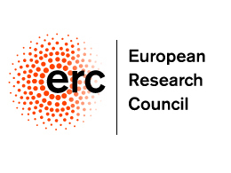

Resolving the Tussle in the Internet: Mapping, Architecture, and Policy Making
The Internet has revolutionalized the way individuals and corporations communicate, publish, access, and search for information. As our globally-connected digital civilization increasingly relies on the smooth and uninterrupted Internet operation, any disruption has a direct negative impact on both the economy and society. However, the Internet was not designed to serve its current role nor was foreseen to be a public good. On the contrary, the Internet was designed to be fully decentralized and thus administrated by the owners of independent networks. Today, the various Internet stakeholders have diverse and often conflicting objectives. The term "tussle" was introduced to refer to this ongoing contention among Internet players with conflicting interests. Indeed, quite often disputes between Internet players or between them and governments hit the news and the negative externalities affect the life of potentially billions of Internet users worldwide and harm innovation on the Internet.
We propose a research agenda to resolve the tussle on the Internet. First, we propose the use of sophisticated techniques to collect and analyze massive network data to unveil the complex interactions among the various Internet players that lead to disputes and to identify the conditions under which a resolution is possible. Second, we utilize additional degrees of freedom to resolve the tussle on the Internet by enabling coordination of the various Internet players. To this end, we introduce expressiveness of all the involved parties in existing protocols and enable agile deployment of third-party services and applications inside operational networks. Third, we contribute to the Internet policymaking debate by providing an up-to-date view of the state and health of the Internet as well as providing unbiased recommendations on how to resolve the Internet tussle. This project is an interdisciplinary effort to foster a dialogue for Internet’s future and sustainability in light of the ever-increasing growth and competitiveness in the Internet ecosystem.
Principal Investigator: Georgios Smaragdakis

The project is supported by the European Research Council (Starting Grant).
For more details follow the official link to the award.